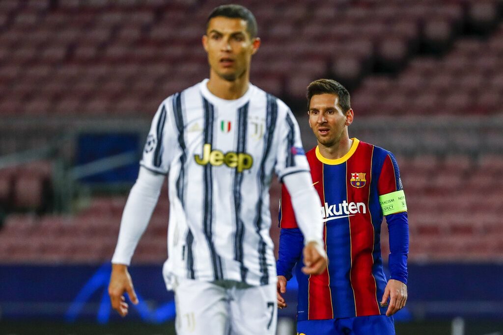

Barcelona - Juventus menang atas Barcelona 3-0 di lanjutan Liga Champions. Cristiano Ronaldo mengaku, dirinya selalu senang menghadapi Lionel Messi.
Barcelona vs Juventus tersaji di matchday terakhir Grup G Liga Champions. Duel yang berlangsung di Camp Nou, Rabu (9/12/2020) dini hari WIB itu dimenangi Si Nyonya Tua dengan skor 3-0.
Cristiano Ronaldo mencetak dua gol lewat eksekusi penalti. Satu gol lainnya dicetak lewat tembakan voli nan indah dari Weston McKennie
Pertandingan itu juga jadi panggung mega bintang sepakbola terbaik saat ini, yaitu Lionel Messi vs Cristiano Ronaldo. Rivalitas keduanya belumlah habis.
Namun Cristiano Ronaldo boleh membusungkan dada, karena tampil lebih apik dan membawa Juventus menang. Ditanya soal pertemuannya dengan Lionel Messi, Ronaldo mengaku senang!
"Dengan Messi, kami telah berbagi 12-13 tahun terakhir dalam hidup kami. Selalu menyenangkan untuk menghadapinya," kata Cristiano Ronaldo seperti dilansir dari situs resmi UEFA.
"Jelas orang berbicara tentang persaingan kami, tetapi bagi saya itu selalu menjadi hak istimewa untuk menghadapinya," tambahnya.
Cristiano Ronaldo mengaku senang bisa membawa Juventus jadi juara grup dan lolos ke babak 16 besar Liga Champions. Dirinya juga selalu senang kalau mencetak gol saat menghadapi Lionel Messi.
"Tentu saya senang mencetak gol ketika saya menghadapinya," ujar Ronaldo.
Baik Cristiano Ronaldo dan Lionel Messi sampai sekarang masih menjadi andalan di klub masing-masing meski sudah berusia di atas 30 tahun.
Ronaldo terus jadi mesin gol Juventus dan Messi masih jadi nyawa permainan Barcelona. Sejauh ini, Ronaldo lebih unggul soal produktivitas mencetak gol dibanding Messi dengan 10 gol berbanding tujuh gol di seluruh kompetisi.